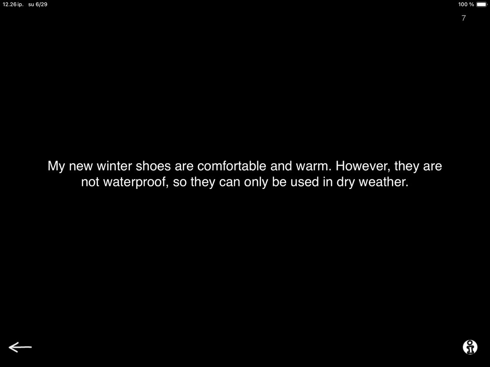
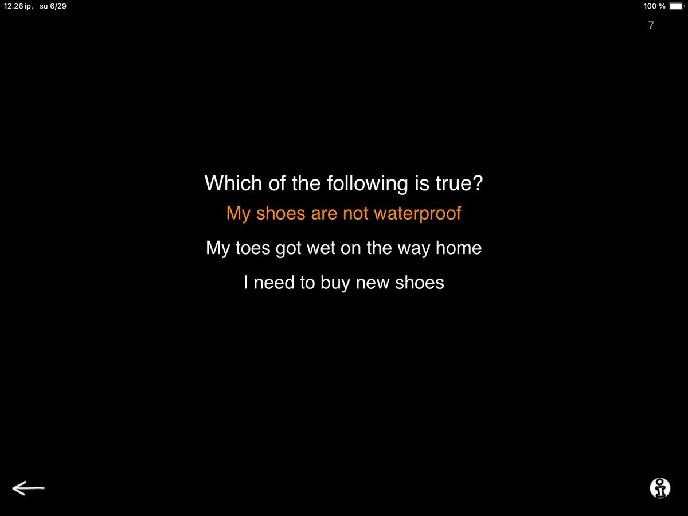
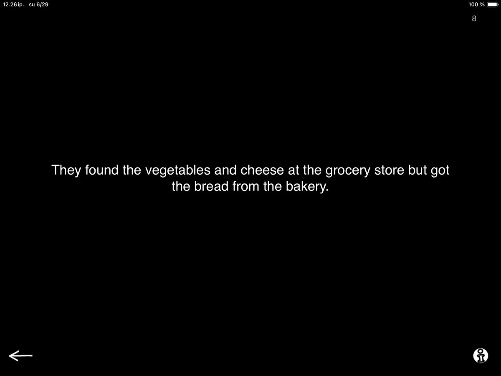
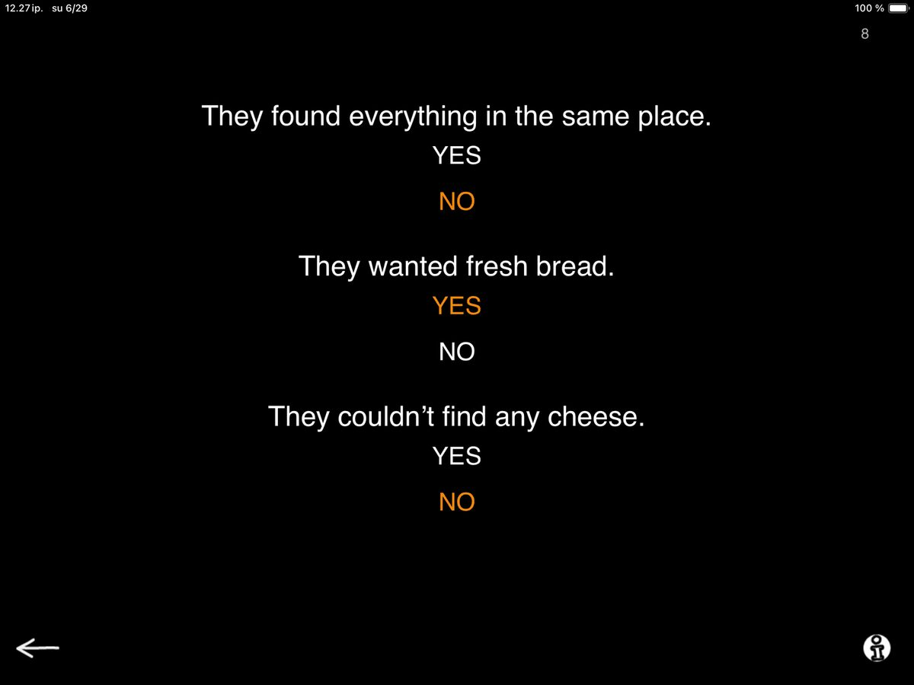

Questions Based on Text is a listening exercise designed to support extracting information and deductive reasoning. The exercise has two modes to choose from: Questions and Yes-No statements. The latest update includes 50 unique texts, equally divided between the two modes.

When you open the task, you start with the Questions mode. Here, you’ll see either a single sentence or a short paragraph, such as:
“My new winter shoes are comfortable and warm. However, they are not waterproof, so they can only be used in dry weather.”

After reading the passage aloud to your patient, you tap the screen to reveal a multiple-choice question related to the text. For example:
“Which of the following is true?
– My shoes are not waterproof
– My toes got wet on the way home
– I need to buy new shoes”
This task targets several key skills: auditory comprehension, delayed recall, critical judgment, and reasoning.
The exercise can be especially useful in supporting rehabilitation goals related to attention, memory, and executive functioning. While offering an to opportunity to work on identifying the correct answer based on what the patient heard, they are also evaluating and rejecting the incorrect alternatives. This requires active listening, holding information in working memory, and comparing multiple options. Since the incorrect options are plausible, patients must rely on a precise understanding of the wording in the information they heard, infer meaning, and apply logic.

When you select the Yes–No option in settings, you will again see a short text on screen, such as:
“They found the vegetables and cheese at the grocery store but got the bread from the bakery.”

Instead of a question, tapping the screen now reveals three YES–NO statements based on the text, such as:
– “They found everything in the same place. YES – NO”
– “They wanted fresh bread. YES – NO”
– “They couldn’t find any cheese. YES – NO”
In this version of the task, you read each statement aloud, and the patient decides whether it is true or false based on the text. It seems like a subtle change, but this can be a game changer for some patients. Yes-No format allows patients with limited verbal output to complete the task using simple verbal responses, gestures, or tangible yes–no aids. By presenting one statement at a time, the auditory load is reduced, making the task more manageable and less overwhelming than selecting from multiple options all at once.
This format also introduces a new kind of challenge—one that reaches beyond successful completion of a comprehension task and resonates well beyond the therapy session. As each statement is presented as a truth claim, the patient is invited not only to recall information but also to take a stance: do they agree or disagree? This built-in opportunity to agree or disagree with the conversation partner, and to express one’s own opinion, makes the task socially and cognitively engaging. Particularly for patients with limited verbal output who might struggle with expressing their differing opinions in discussion settings.
When appropriate, I like to lean into this dynamic. Sometimes I deliver the statements in a very convincing tone or even playfully disagree with the patient’s stance, then invite them to explain their reasoning and try to change my mind. It’s a powerful way to encourage critical thinking and support expressive language in a natural, conversational context.
Additionally, working through several statements based on the same text supports delayed auditory recall. Patients often need to refer back to earlier information, and asking for a repetition of the original passage becomes part of the process. Learning to recognize when they need clarification and feeling confident enough to ask for it is not only a valuable skill in therapy, but one of the most important communication tools in everyday life.